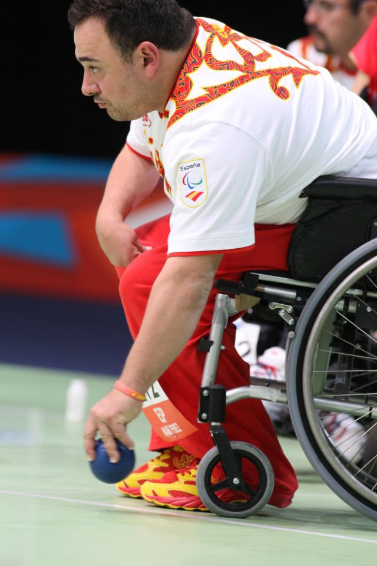
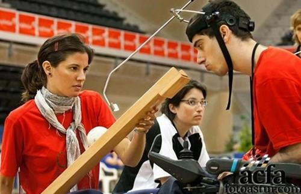
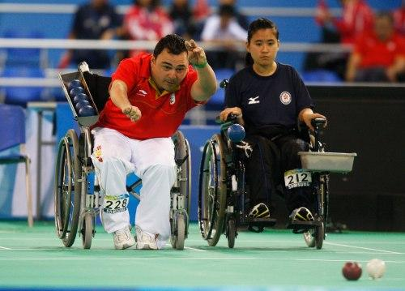
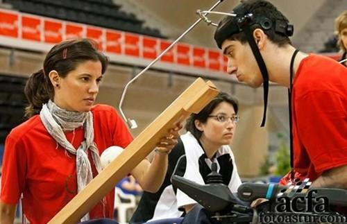
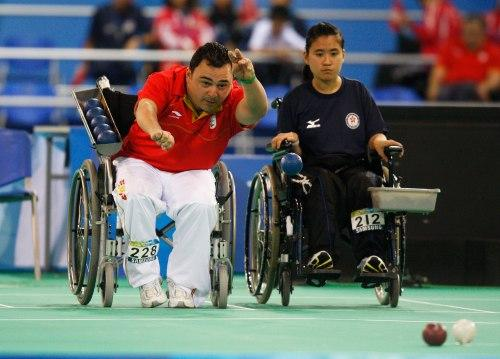
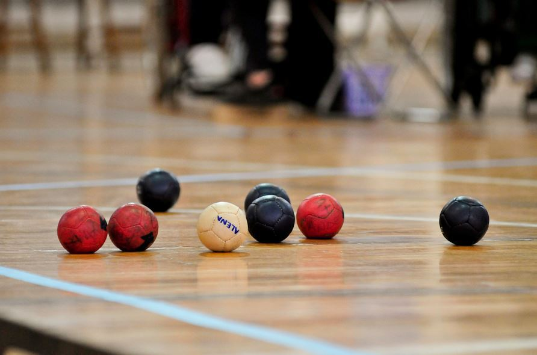
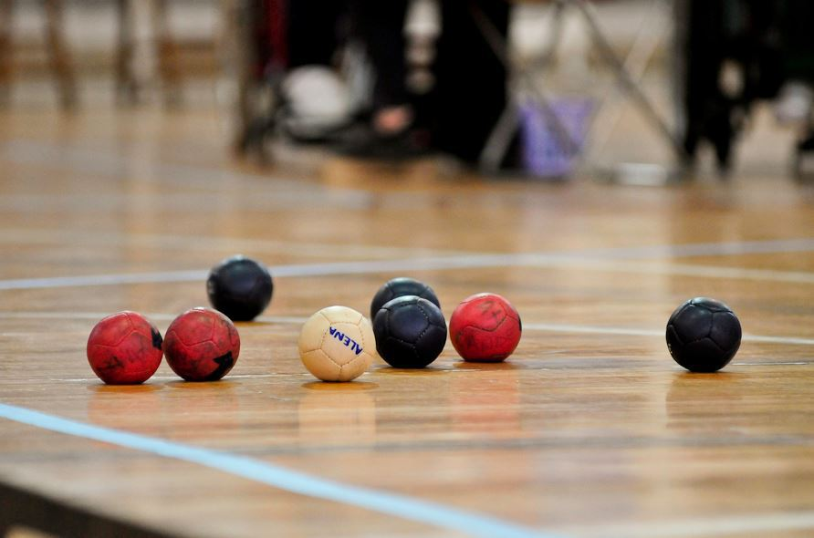
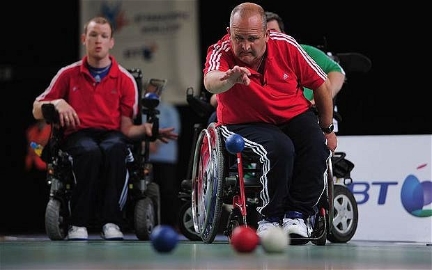
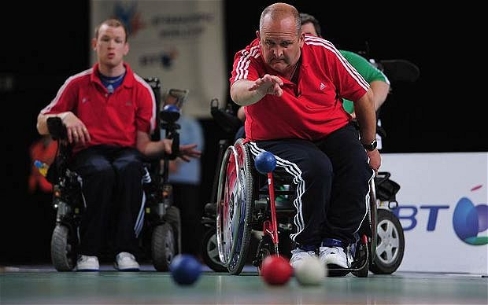

La magia de la Boccia
Jugadores
Fuerza, técnica y estrategia. Son algunas de las cualidades que se requieren para competir en boccia, un deporte paralímpico similar a la petanca con cuatro categorías en función de la movilidad del jugador. Álvaro Ballesteros, campeón de España de infantil de este deporte, y Manolo Martín, en la élite de la boccia internacional con un amplio palmarés –medalla de bronce en las paralimpiadas de Pekín (2008) y por equipos en el Mundial de 2010, además de plata y bronce en los Europeos de 2009 y 2013, entre otros muchos títulos que incluyen el Campeonato de España 2008, 2009, 2010 y 2013– derrochan estas habilidades, como demuestran cada vez que compiten. Ambos residen en el Zaidín –aunque Manolo nació en Pórtugos – juegan al BC2 (no requieren ayuda de un técnico para lanzar) y forman parte del presente y futuro de este deporte en España. Los dos entraron en contacto con este juego en Aspace, la asociación granadina de atención a personas con parálisis cerebral. Fue su pasión por el fútbol y su negativa a que su movilidad reducida los alejara del deporte lo que les animó a probar con la boccia hace catorce años, en el caso de Martín y cinco, en el de Ballesteros. No tenía físico para competir en fútbol al nivel que deseaba, con lo que solo podía aspirar a jugar por afición. Entonces Paco Cobos me puso a lanzar bolas y me di cuenta de que se me daba bien”, cuenta Manolo, con una carrera meteórica desde entonces. No solo fue el primer español en alzarse con una medalla en boccia en las paralimpiadas, sino que no ha dejado de cosechar éxitos a nivel mundial, europeo y español. Aunque a Álvaro le “costó al principio” su amor por el deporte le ha llevado a superar las barreras que se han cruzado en su camino. Pese a su escasa movilidad en las manos ha pasado de tercero, a segundo y campeón de España. “Mi sueño es jugar en la Selección Española”, señala el también subcampeón de la liga andaluza, sin perder esa sonrisa capaz de transmitir a los demás que el vaso siempre está lleno. Su deportividad y amabilidad lo definen como jugador, pero también como persona. Además “ha madurado mucho” en este deporte, resalta Manolo, al que le gustaría capitanear a Álvaro y a otras jóvenes promesas de la boccia granadina jugando por equipos. “Me encantaría competir con estos chavales. Por grupos hay mucha complicidad, aunque también la responsabilidad es mayor”, indica, mientras rememora sus inicios con el buen humor que lo caracteriza.
La mayoria de los clubes también sobreviven gracias a las rifas y cuotas de los afiliados, ya que la financiación escaseaba incluso antes de la crisis. Lejos de desmotivarse por inconvenientes como éstos, Manuel y Álvaro entrenan duramente cada semana para mantener el nivel en un juego que les apasiona. “No solo se requiere tirar bien con el brazo. Es necesario pensar mucho y tomar decisiones que precisan cabeza. Según qué momento, la estrategia cuenta mucho. No solo es lanzar, estudiamos a los adversarios, a los que no puedes enseñar tus armas” La exigencia es “cada vez mayor” –sobre todo con unas paralimpiadas en el horizonte– pero el duro esfuerzo trae recompensas más allá de títulos y podios, como los lazos de amistad que se crean, coinciden los dos ‘bocheros’. “Aunque hubo momentos en los que incluso me planteé arrojar la toalla, con el tiempo me he dado cuenta de que si me arrebatan la boccia me quitan la vida. Porque aunque te metas unas palizas, haces amigos, viajas y hasta te puedes llegar a enamorar. Si además logras divertirte, el objetivo está cumplido”, subraya Manolo, que ha logrado hacer de su pasión por el deporte su profesión. Tanto él como Álvaro siguen esforzándose a diario para cumplir sus metas deportivas, convencidos de que no hay límites que se resistan a los sueños y internacional.
El jugador catalan, internacional. Buena gente dentro y fuera del campo, tiene experiencia jugando con la Selección Española, su compañero Benito dice que lo importante de este juego no es ganar sino conoce a gente y aprender de otros jugadores.
Ex-jugadora gaditana, una mujer con mucha cabeza para el juego, su entrenadora Maria Frant estaba muy contenta por su rendimiento tanto en la liga como en la copa Andaluza.
Jugador catalan, internacional. Su amabilidad dentro y fuera del campo le hace crecer mas, es muy deportista, le gusta ganar legalmente y cuando ganas siempre animar al adversario.
Jugador vasco, deportista de Boccia y de Baloncesto. Llego a la Boccia apretando muy fuerte y en los dos años que lleva ya sabe que es ponerse la camiseta de la Seleccion Española
Ex-jugadora Gaditana, un ejemplo a seguir como fuera y dentro del campo, siempre se esta sonriendo y si pierde o gana esta contenta. Su ex-entrenadora Maria Frant tambien en un ejemplo a seguir. Todos los entrenadores/as dicen igual "venimos a jugar y a pasanorlo bien, si se pierde o se gana da igual
Jugador valenciano, internacional. 7 Veces internacional con la Selección Española, un jugador que no se pone nervioso en situaciones dificiles, capitan del equipo valenciano y muy inteligente, muy deportivo y siempre que va competir se pone una cinta en la cabeza.
Jugador Granaino ,juega con un instrumento que se llama canaleta. Es un gran deportista y con muy buena cabeza, creo que tiene futuro en la boccia
Jugador Jerezano, también juega con canaleta. Con un corazón que no le cabe en el pecho, tiene muy buena cabeza y hacer jugadar impresionantes
Jugador Cordobes, un gran deportista y poco a poco va evolucionado, siemmpre queda por arriba en la liga andaluza.
Jugadora Sevillana, capitana del equipo sevillista. Muy segura de sí misma y sabiendo lo que hace, quiere que su equipo de lo máximo en los partidos.
Jugadora de Huelva, cada jornada va evolucionado. Muy buena cabeza y muy buena mano, cada jornada va para mejor.
Jugadora de Badajoz, esta aprendiendo mucho y estoy seguro que en un futuro llegara muy alta.
IMAGENES
.JPG) 



 

 

.jpg)

© Página realizada por A.J.B.C en 2018.